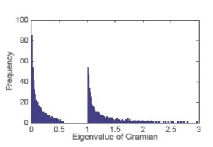

Research

Scalable and resilient operation of large-scale networks is dependent on our ability to learn their properties from dispersed observations (i.e., distributed inference) and our ability to influence them form localized action points (i.e., decentralized interventions). The main goal of my research is to facilitate these functionalities; first and foremost, by identifying paradigms that best describe and predict individual and aggregate behaviors. Such behaviors are shaped by the interactions among network components (so-called agents) and they depend critically on the type and quality of the information available to each agent. Understanding these interactions helps us determine whether information transmission is efficient, and guides us through interventions that rely on information flow (e.g., decentralized control or seeding). My ultimate aim is to demonstrate the power of behavioral paradigms in control and design, where their application leads to improved policies and practices.
 In technological
networks, I have contributed to problems of decentralized control and distributed estimation: achieving global objectives by
injecting local inputs on the one hand, and learning system properties given restricted partial observations, on the other.
On the social systems side, I have been interested in both the effectiveness of information transmission, sharing,
and exchange through observed actions, as well as the effectiveness of decision-making using the available data. In fact,
these issues are inter-related, as are control and estimation. On the one hand, the quality of decision-making depends on the
available information. On the other hand, decisions reveal some of the information at disposal of the decision-maker.
In technological
networks, I have contributed to problems of decentralized control and distributed estimation: achieving global objectives by
injecting local inputs on the one hand, and learning system properties given restricted partial observations, on the other.
On the social systems side, I have been interested in both the effectiveness of information transmission, sharing,
and exchange through observed actions, as well as the effectiveness of decision-making using the available data. In fact,
these issues are inter-related, as are control and estimation. On the one hand, the quality of decision-making depends on the
available information. On the other hand, decisions reveal some of the information at disposal of the decision-maker.
I address these questions (distributed inference and decentralized interventions) through the lenses of network and data sciences, by relying on tools in probability, graph theory, applied statistics and machine learning, algorithms and complexity, as well as control theory. These tools allow me to highlight key structural features that influence behavior; features such as presence of influential agents, observational and information asymmetries, data flow topology and heterogeneity.
Dynamic Structural Modeling, Inference and Interventions on Social Systems
My postdoctoral research is focused on dynamic structural modeling to facilitate distributed inference and decentralized interventions on social systems. I am mostly interested in the development of structural models that take into account not only the statistical and causal dependencies between the (observable or latent) variables but also the behavioral mechanisms that influence the decision-makers in different situations. The latter often requires a deep understanding of social and human sciences to accurately characterize a decision scenario. Such models have the advantage of being amenable to policy interpretation while revealing the implications of the psychology of the mind in a particular scenario. Given the complexity of such models, Bayesian inference on them is often intractable. To overcome this intractability, my collaborators and I rely on approximate Bayesian computation and simulation-based techniques to perform inference, estimation, and prediction. The three processes that we are studying are:
social contagion
network formation
online reputation
Social Contagion refers to the spread of innovations (adoption of new behaviors or products) through peer influence over social networks. Social contagion processes are classified into simple and complex depending on how much the probability of adoption increases with the number of adopters in one’s local neighborhood. In simple contagion, with each exposure, the user has an independent probability of adoption, while in complex contagion the adoption probability depends on whether or not enough reinforcement is achieved during the exposure. We study the type of contagion (simple versus complex), in terms of the activation functions (probability of adoption versus the number of adopters) and investigate the effects of network topology on the speed of diffusion. We also use a deep learning inference architecture to classify such behaviors in a wide range of network structures and against a variety of plausible contagion models.
Network formation: Pervasiveness of social and economic network data give rise to important questions about the formation and evolution of links between the networked entities (agents). A better understanding of the underlying mechanisms of network formation has important implications for all manners of social policy and business strategy, where network interactions and externalities play a role. The existing literature in social science and economics addresses behavioral and strategic aspects of link formation (such as homophily and heterophily) by providing statistical evidence for the existence of such behaviors and characterizing their equilibrium implications under game theoretic models. However, there remains a demand for a comprehensive inference framework that reconciles the evolution of the observed interconnection data with the strategic interactions of the agents. We study the evolution of network structure as the agents form links over time according to their joint surplus from a general utility model. We use this generative model for training a neural network that infers the individuals’ preferences and other behavioral attributes affecting their link formation decisions.
Online reputation systems constitute an important component of many electronic commerce platforms. Reviews and ratings posted on these platforms strongly influence the purchase and browsing behavior of customers, and play an important role in revenue generation. The existing literature in marketing, computer science, and economics highlights the statistical foundations of such impacts and addresses some of the behavioral and structural patterns that govern them (such as self-selection and reporting bias). These studies, however, fall short of a comprehensive framework to capture all aspects of online reputation dynamics that include the public perception of reviews, as well as the purchase and rating decisions. We develop a dynamic structural model for the evolution of reputation on an online e-commerce platform and use the proposed generative model to make inferences about individuals’ rating behavior. We train a deep learning inference architecture with the simulated data from our generative model and test it on the real time-series data of reviews submitted on a popular e-commerce platform. The results reveal the circumstances under which these reviews are posted and their implications for the evolution of product ratings.
Black mirror Nosedive (S3E1) has an interesting perspective on the confluence of social contagion, link formation and reputation processes in a future dystopia, dominated by the social media. Aside from their societal impacts, these processes have a proven track record in revenue generation for e-commerce and viral marketing. A deep understanding of these processes is crucial to modern marketing science.
See here for a list of the relevant publications.
See Nicky Case's nice illustration tool for contagions.
Asymptotic Theory of Random Dynamic Systems and Networks
Some of my more theoretical research is focused on developing tools that pioneer applications of random matrix theory in the modeling and analysis of large-scale networks and dynamic systems. Such tools have great potential for addressing questions whose depth and analytical complexity have impeded researchers so far. They are also very versatile and expressive when it comes to modeling and explaining structural features of very large-scale systems such as robotic swarms or the extremely high dimensional data sets that arise in the study of the Internet and online social networks.
Here are some of the highlights from our research on random matrix theory for systems and networks:
Limiting spectral moments of random matrices with rank one pattern of variance
Limiting spectral moments of random graphs with specified expected degrees (the Chung-Lu model)
Theoretical justification for the quasi-triangular spectrum of power-law networks (reported in empirical literature)
H2 norm and the spectrum of the controllability Gramian of random linear systems

The theoretical insights from random matrix theory are complementary to what we learn from the theory of random graphs or systems and control theory. Random matrix theory offers new ways of thinking about the design and analysis of massive scale systems.
See here for a list of the relevant publications.
Analysis and Design of Networked Dynamic Systems
Networked dynamic systems build upon complex interactions between many co-evolving sub-components. Their industrial applications are plentiful and diverse ranging from chemical and biological processes to robotics and the power grid. Our results touch upon many aspects of the analysis and design for such complex systems, including distributed detection, estimation, reliable design, and decentralized control. My collaborators and I have been particularly interested in the following questions:
How can we identify failures and structural variations from the observed dynamics of a limited number of output nodes?
How can we exercise control over the entire networks by accessing only a few of their input nodes?
How can we learn about environmental variables from the dispersed and disparate observations of different nodes in a network?
Tools from control theory, optimization, signal processing, statistics, graph theory, combinatorics, and discrete algorithms have enabled us to propose effective solutions to each of these problems.
Some highlights from our results on the analysis and design of networked dynamic systems are as follows:
Protecting structural controllability against link and node failures (graph theory, combinatorics)
Efficient methods to rank links and nodes for the preservation of structural controllability (graph theory, combinatorics)
Efficient placement of actuators for optimal control performance (submodular maximization)
Efficient Placement of sensors for detection and isolation of failures (submodular maximization)
Detection and isolation of link failures based on the observed outputs (linear systems theory)
Distinguishing network structures based on their nodal dynamics (algebraic graph theory)
Learning from intermittent streams of heterogeneously correlated data (distributed estimation, learning theory, Bayesian statistics)

Today cars and mobile phones rely on large arrays of sensors and actuators for their operations. Robotic networks are employed to manage massive inventories efficiently, at a low cost. The analytical tools that are developed in the study of complex network systems will pave the way for the Internet of Things, Cyber-Physical Systems, and other disruptive technologies of future.
See here for a list of the relevant publications.
Group Decision Making and Social Learning
In my Ph. D. dissertation, I studied the purely informational interactions of individuals in a group, where they receive private information and act based on that information while repeatedly observing each other’s beliefs or actions. Such situations arise for example in jury deliberations, expert committees, medical diagnoses, etc. My collaborators and I developed parallel theories of group decision making following the Bayesian and non-Bayesian approaches. Our results indicate that the computations of a rational (Bayesian) decision-maker can scale up very fast with the increasing group size (NP-hardness). However, there are special network structures or cases with strong inherent symmetries, where these calculations simplify significantly.

In the non-Bayesian framework, we propose the no-recall model of belief formation and decision making in groups, by relying on the time-one Bayesian update and using it for all future decision epochs. The no-recall model offers a behavioral framework for heuristic decision making that is rooted in the Bayes rule but avoids the unrealistic complexities of rational inference. Our proposal is also consistent with a dual-process psychological theory of thinking: the group members behave rationally at the initiation of their interactions with each other (the slow and deliberative mode); however, in the ensuing decision epochs, they rely on a heuristic that replicates their experiences from the first stage (the fast automatic mode). These heuristics may be fitted for simple one-shot decision making but they fail to handle the complexities of a public discussion for group decision-making. As a result, many inefficiencies arise in the outcome of such discussions and their roots can be traced to the underlying heuristic decision-making mechanisms. Two of the main issues that arise in the study of decision-making organizations are information aggregation and decision-flow architecture. Our formal theories of group decision-making provide structural insights into both of these issues and can be operationalized to avoid redundancy and increase the efficiency of the aggregate group-decision outcome among heuristic decision-makers.
Some highlights from our results on group decision making and social learning are as follows:
The characterizing the computational complexity of Bayesian group decisions (theory of computation)
Foundations of linear opinion dynamics (decision theory, Bayesian statistics)
A no-recall model of heuristic decision making in groups (decision theory, behavioral economics)
Algorithmic, computational, and optimality aspects of decision-making in organizations are vastly unexplored. There are many untapped potentials for applying these techniques to improve the operations of teams in medical, legal and other industrial decision-making organizations. By investigating the effects of heuristics and biases, we can improve the practice of social and organizational policies, such that new designs can accommodate commonly observed biases, and work well in spite of them.
See here for a list of the relevant publications.
Controller Design and Tuning
The versatility and simplicity of proportional, integral and derivative (PID) actions have made them the most common form of feedback control, and almost universal all across the agriculture, transport, chemical and manufacturing industries, or even telecommunications and web services. Our ability to efficiently tune these controllers is key to their widespread adoption. My collaborators and I have advanced the state of the art in process control by proposing new ways of tuning feedback controllers. Our methods focus on explicit characterization of feasible domains in the control parameter space. Tools from complex analysis allow us to study the root boundaries of various polynomials that arise in the study of the feasible domains.

Fractional order control builds on a natural generalization of the integral and derivative feedback actions based on fractional order differential operators. We have successfully applied several of our techniques in the design and stabilization of fractional order controllers. Here are some of the highlights from our results on the design and tuning of feedback controller:
Stability regions for fractional-order controllers and their integer approximations
Constrained tuning and parameter optimization over the feasible regions
Using the stability region centroids for robust and non-fragile stabilization
Ubiquitous adoption of proportional and integral actions for feedback control can be traced back to the industrial revolution. Improved tuning is essential as we encounter new challenging control applications in complex industrial processes. Fractional order controllers offer additional degrees of freedom in tuning, while preserving the essential structure of the PID feedback which is so popular in industrial applications.
See here for a list of the relevant publications